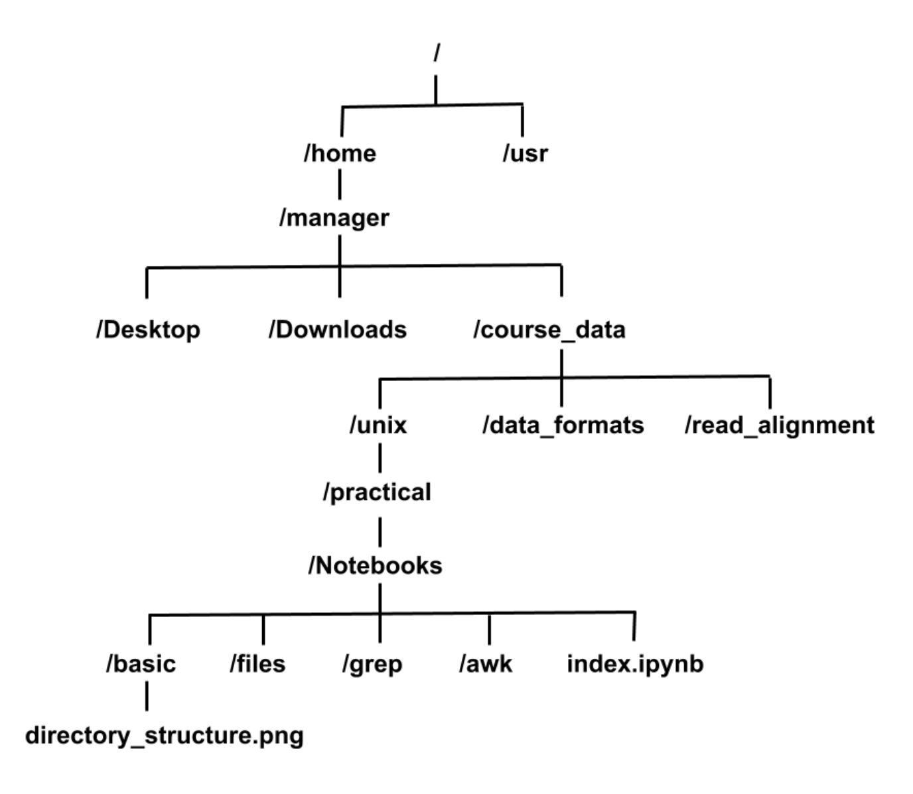

Exercises
0.1 Introduction
For the following exercises, you would need access to the course Virtual Machine.
1 Unix for Bioinformatics
1.1 Introduction
Unix is the standard operating system on most large computer systems in scientific research, in the same way that Microsoft Windows is the dominant operating system on desktop PCs.
Unix and MS Windows both perform the important job of managing the computer’s hardware (screen, keyboard, mouse, hard disks, network connections, etc…) on your behalf. They also provide you with tools to manage your files and to run application software. They both offer a graphical user interface (desktop). These desktop interfaces look different between the operating systems, use different names for things (e.g. directory versus folder) and have different images but they mostly offer the same functionality.
Unix is a powerful, secure, robust and stable operating system which allows dozens of people to run programs on the same computer at the same time. This is why it is the preferred operating system for large-scale scientific computing. It runs on all kinds of machines, from mobile phones (Android), desktop PCs to supercomputers.
1.2 Why Unix?
Increasingly, the output of biological research exists as in silico data, usually in the form of large text files. Unix is particularly suitable for working with such files and has several powerful and flexible commands that can be used to process and analyse this data. One advantage of learning Unix is that many of the commands can be combined in an almost unlimited fashion. So if you can learn just six Unix commands, you will be able to do a lot more than just six things.
Unix contains hundreds of commands, but to conduct your analysis you will probably only need 10 or so to achieve most of what you want to do. In this tutorial we will introduce you to some basic Unix commands followed by some more advanced commands and provide examples of how they can be used in bioinformatics analyses.
1.3 Learning outcomes
This tutorial consists of two sections, Introduction to UNIX and Advanced UNIX for Bioinformatics. By the end of the first section you can expect to be able to:
• Describe why UNIX is sutable for analysing NGS data
• Know what the UNIX command line is
• Understand the UNIX directory structure and navigate around this structure
• Manipulate (move, copy and delete ) files using the command line
• Look at and sort the contents of a file
• Find the unique items in a list
• Use the man command to find out more information about UNIX commands
By the end of the second section you can expect to be able to:
• Extract information from large files
• Use regular expressions to search for particular patterns in a file
• Use the AWK programming language to extract and filter information from a file
• Create a bash script to perform several tasks at once
1.4 Sections of the Unix tutorial
Introduction to UNIX comprises the following sections:
Basic unix
Files
Advanced UNIX for Bioinformatics comprises the following sections:
grep
awk
Bash scripts
Advanced bash
Note: We do not expect you to get through all the material in the time allocated and a good target to aim for is the end of section 3 (grep). The remaining sections are optional and are for students who would like to expand their UNIX skills and can be completed outside the course hours.
1.6 Basic Unix
1.6.1 The Command line
The commandline or ‘terminal’ is an interface you can use to run programs and analyse your data. If this is your first time using one it will seem pretty daunting at first but, with just a few commands, you’ll start to see how it helps you to get things done much quicker. You’re probably more familiar with software which uses a graphical user interface, also known as a GUI.
1.7 Getting started
Let’s check that you’re in the right place. Type the command below in the terminal window followed by the Enter key:
pwd
It should display something like:
/home/manager/course_data/unix/practical/Notebooks
Then continue through the course, entering any commands that you encounter (highlighted in a grey box with a keyboard symbol) into your terminal window. Let’s start by moving into the directory called basic:
cd basic
Before getting started there are some general points to remember that will make your life easier:
Unix is case sensitive - typing ls is not the same as typing LS.
Often when you have problems with Unix, it is due to a spelling mistake. Check that you have not missed or added a space. Pay careful attention when typing commands across a couple of lines.
1.8 Files and directories
Directories are the Unix equivalent of folders on a PC or Mac. They are organised in a hierarchy, so directories can have sub-directories and so on. Directories are very useful for organising your work and keeping your account tidy - for example, if you have more than one project, you can organise the files for each project into different directories to keep them separate. You can think of directories as rooms in a house. You can only be in one room (directory) at a time. When you are in a room you can see everything in that room easily. To see things in other rooms, you have to go to the appropriate door and crane your head around. Unix works in a similar manner, moving from directory to directory to access files. The location or directory that you are in is referred to as the current working directory.
For the file called index.ipynb under the unix directory, the location or full pathname can be expressed as:
ls /home/manager/course_data/unix/practical/Notebooks/index.ipynb

1.9
1.9.1 pwd - find where you are
The command pwd stands for print working directory. A command (also known as a program) is something which tells the computer to do something. Commands are therefore often the first thing that you type into the terminal.
As described above, directories are arranged in a hierarchical structure. To determine where you are in the hierarchy you can use the pwd command to display the name of the current working directory. The current working directory may be thought of as the directory you are in, i.e. your current position in the file-system tree.
To find out where you are, type the following:
pwd
Remember that Unix is case sensitive, PWD is not the same as pwd.
pwd will list each of the folders you would need to navigate through to get from the root (top level directory) of the file system to your current directory. This is sometimes refered to as your ‘absolute path’ to distinguish that it gives a complete route rather than a ‘relative path’ which tells you how to get from the current working directory to another directory. More on that shortly.
1.9.2 ls - list the contents of a directory
The command ls stands for list. The ls command can be used to list the contents of a directory.
To list the contents of your current working directory type:
ls
You should see that there are 3 items in this directory.
To list the contents of a directory with extra information about the items type:
ls -l
Instead of printing out a simple list, this should have printed out additional information about each file. Note that there is a space between the command ls and the -l. There is no space between the dash and the letter l.
-l is our first example of an option. Many commands have options which change their behaviour but are not always required.
What do each of the columns represent? (file permissions, file owner, group owner, size, date)
To list all contents of a directory including hidden files and directories (hidden files and directories are not shown by default and are used to help important data from being deleted) type:
ls -a -l
This is an example of a command which can take multiple options at the same time.
How many hidden files and directories are there?
Try the same command but with the -h option:
ls -alh
You’ll also notice that we’ve combined -a -l -h into what appears to be a single -alh option. It’s almost always ok to do this for options which are made up of a single dash followed by a single letter.
What does the -h option do?
To list the contents of the directory called Pfalciparum with extra information type:
ls -l Pfalciparum/
In this case we gave ls an argument describing the relative path to the directory Pfalciparum from our current working directory. Arguments are very similar to options but they often refer to things which are not prefixed with dashes.
How many files are there in this directory?
1.9.3 Tab completion
Typing out directory or file names is really boring and you’re likely to make typos which will at best make your command fail with a strange error and at worst overwrite some of your carefully crafted analysis. Tab completion is a trick which normally reduces this risk significantly.
Instead of typing out ls Pfalciparum/, try typing ls P and then press the tab key (instead of Enter). The rest of the folder name should just appear. If you have two files of directories with simiar names (e.g. directory_structure.png and directory_structure2.png) then you might need to give your terminal a bit of a hand to work out which one you want. In this case you would type ls -l d, when you press tab the terminal would read ls -l directory_structure, you could then type 2 followed by another tab and it would work out that you meant directory_structure2.png
1.10 File permissions
Every file and directory have a set of permissions which restrict what can be done with a file or directory.
Read (r): permission to read from a file/directory
Write (w): permission to modify a file/directory
Execute (x): Tells the operating system that the file contains code for the computer to run, as opposed to a file of text which you open in a text editor.
In the terminal window type:
ls -l
This shows the permissions associate with each file and directory. The first set of permissions (characters 2,3,4) refer to what the owner of the file can do, the second set of permissions (5,6,7) refers to what members of the Unix group can do and the third set of permissions (8,9,10) refers to what everyone else can do.
1.10.1 cd - change current working directory
The command cd stands for change directory.
The cd command will move you from the current working directory to another directory, in other words allow you to move up or down in the directory hierarchy.
To move into the Styphi directory type the following. Note, you’ll remember this more easily if you type this rather than copying and pasting. Also remember that you can use tab completion to save typing all of it.
cd Styphi/
Now use the pwd command to check your location in the directory hierarchy and the ls command to list the contents of this directory.
pwd
ls
You should see that there are 3 files called: Styphi.fa, Stypi.gff, Styphi.noseq.gff
1.10.2 Tips
There are some short cuts for referring to directories:
• . Current directory (one full stop)
• .. Directory above in the hierarchy (two full stops)
• ~ Home directory (tilde)
• / Root of the file system (like C: in Windows)
Try the following commands, what do they do?
ls .
ls ..
ls ~
As you may remember, ls will only list what is in the directories. To move to the directory, you need to use cd. Try moving between directories a few times. Can you get into the Pfalciparum/ and then back into Styphi/? It might be useful to look at Figure 1 when attempting this task.
When you are finished moving between directories and have moved to the Styphi directory type the command below.
pwd
It should return the result below, if not then you are not in the Styphi directory.
/home/manager/pathogen-informatics-training/Notebooks/Unix/basic/Styphi
1.10.3 cp - copy a file
The command cp stands for copy.
The cp command will copy a file from one location to another and you will end up with two copies of the file.
To copy the file Styphi.gff to a new file called StyphiCT18.gff type:
cp Styphi.gff StyphiCT18.gff
Use ls to check the contents of the current directory for the copied file:
ls
1.10.4 mv - move a file
The mv command stand for move.
The mv command will move a file from one location to another. This moves the file rather than copies it, therefore you end up with only one file rather than two. When using the command, the path or pathname is used to tell Unix where to find the file. You refer to files in other directories by using the list of hierarchical names separated by slashes. For example, the file called StyphiCT18.gff in the directory Styphi has the path Styphi/StyphiCT18. If no path is specified, Unix assumes that the file is in the current working directory.
To move the file StyphiCT18.gff from the Styphi directory to the current directory type:
cd ..
mv Styphi/StyphiCT18.gff .
Use the ls command to check the contents of the Styphi directory and the current directory to see that StyphiCT18.gff has been moved.
ls Styphi
ls
1.10.5 rm - delete a file
The command rm stands for remove.
The rm command will delete a file permanently from your computer so take care!
To remove the copy of the S. typhi file, called StyphiCT18.gff type:
rm StyphiCT18.gff
Use the ls command to check the contents of the current directory to see that the file StyphiCT18.gff has been removed.
ls
Unfortunately there is no “recycle bin” on the command line to recover the file from, so you have to be careful!
1.10.6 find - find a file
The find command can be used to find files matching a given pattern. It can be used to recursively search the directory tree for a specified name, seeking files and directories that match the given name.
To find all files in the current directory and all its subdirectories that end with the suffix gff:
find . -name *.gff
How many gff files did you find?
To find all the subdirectories contained in the current directory type:
find . -type d
How many subdirectories did you find?
1.10.7 Exercises
Many people panic when they are confronted with a Unix prompt! Don’t! All the commands you need to solve these exercises are provided above and don’t be afraid to make a mistake. If you get lost ask an instructor. If you are a person skilled at Unix, be patient this is only a short exercise.
To begin, open a terminal window and navigate to the basic directory under the the unix directory (remember use the Unix command cd) and then complete the exercise below.
- Use the
lscommand to show the contents of the basic directory. - How many files are there in the Pfalciparum directory?
- What is the largest file in the Pfalciparum directory?
- Move into the Pfalciparum directory.
- How many files are there in the fasta directory?
- Copy the file Pfalciparum.bed in the Pfalciparum directory into the annotation directory.
- Move all the fasta files in the directory Pfalciparum to the fasta directory.
- How many files are there in the fasta directory?
- Use the find command to find all gff files in the Unix directory, how many files did you find?
- Use the find command to find all the fasta files in the Unix directory, how many files did you find?
When you have completed these exercises move on to the next part of the tutorial, looking inside files.
1.11 Looking inside files
A common task is to look at the contents of a file. This can be achieved using several different Unix commands, less, head and tail. Let us consider some examples.
But first, change directory into the files directory. You may find Figure 1 useful here as depending on the directory you are currently in you may need to use a different command than the one shown below.
cd ../files
1.11.1 less
The less command displays the contents of a specified file one screen at a time. To test this command type the following command followed by the enter key:
less Styphi.gff
head Styphi.gff
The contents of the file Styphi.gff is displayed one screen at a time, to view the next screen press the space bar. As Styphi.gff is a large file this will take a while, therefore you may want to escape or exit from this command. To do this, press the q key, this kills the less command and returns you to the Unix prompt. The less command can also scroll backwards if you hit the b key. Another useful feature is the slash key, /, to search for an expression in the file. Try it, search for the gene with locus tag t0038. What is the start and end position of this gene?
1.11.2 head and tail
Sometimes you may just want to view the text at the beginning or the end of a file, without having to display all of the file. The head and tail commands can be used to do this.
The head command displays the first ten lines of a file.
To look at the beginning of the fie Styphi.gff file type:
head Styphi.gff
The tail command displays the last ten lines of a file.
To look at the end of Styphi.gff type:
tail Styphi.gff
The amount of the file that is displayed can be increased by adding extra options. To increase the number of lines viewed from 10 to 25 add -n 25 to the command:
tail -n 25 Styphi.gff
In this case you’ve given tail an option in two parts. In this case the -n says that you want to specify the number of lines to show and the 25 bit tells it how many. Unlike earlier when we merged options like ls -lha together, it’s not a good idea to merge multiple two part options together because otherwise it is ambiguous which value goes with which option.
The -n option is such a common option for tail and head that it even has a shorthand: -n 25 and -25 mean the same thing.
1.11.3 Saving time
Saving time while typing may not seem important, but the longer that you spend in front of a computer, the happier you will be if you can reduce the time you spend at the keyboard.
Pressing the up/down arrows will let you scroll through previous commands entered.
If you highlight some text, middle clicking on the mouse will paste it on the command line.
Tab completion doesn’t just work on directory and file names, it also works on commands. Try it by typing tai and pressing yhe tab key.
Although tab completion works on commands and filenames, unfortunately it does not work on options or other arguments.
1.12 Getting help man
To obtain further information on any of the Unix commands introduced in this course you can use the man command. For example, to get a full description and examples of how to use the tail command type the following command in a terminal window.
man tail
There are several other useful commands that can be used to manipulate and summarise information inside files and we will introduce some of these next, cat, sort, wc and uniq.
1.13 Writing to files
So far we’ve been running commands and outputting the results into the terminal. That’s obviously useful but what if you want to save the results to another file?
Type this:
head -1 Styphi.gff > first_Styphi_line.txt
It may look like nothing has happened. This is because the > character has redirected the output of the head command. Instead of writing to the standard output (in this case your terminal) it sent the output into the file first_Styphi_line.txt. Note that tab completion works for Styphi.gff because it exists but doesn’t work for first_Styphi_line.txt because it doesn’t exist yet.
1.13.1 cat
cat is another way of reading files, but unlike less it just throws the entire contents of the file to your standard output. Try it on first_Styphi_line.txt
cat first_Styphi_line.txt
We don’t need first_Styphi_line.txt any more so delete it by typing
rm first_Styphi_line.txt
The cat command can also be given the names of multiple files, one after the other and it will just output the contents of all files. The order in which the files are displayed is determined by the order in which they appear in the command line. You can use this concept and the > symbol to join files together into a single file.
Having looked at the beginning and end of the Styphi.gff file you should notice that in the GFF file the annotation comes first, then the DNA sequence at the end. If you had two separate files containing the annotation and the DNA sequence, it is possible to concatenate or join the two together to make a single file like the Styphi.gff file you have just looked at.
For example, we have two separate files, Styphi.noseq.gff and Styphi.fa, that contain the annotation and DNA sequence, respectively for the Salmonella typhi CT18 genome. To join together these files type:
cat Styphi.noseq.gff Styphi.fa > Styphi.concatenated.gff
The files Styphi.noseq.gff and Styphi.fa will be joined together and written to a new file called Styphi.concatenated.gff.
The > symbol in the command line directs the output of the cat program to the designated file Styphi.concatenated.gff. Use the command ls to check for the presence of this file.
ls
1.13.2 wc - counting
The command wc counts lines, words or characters.
There are two ways you could use it:
wc -l Styphi.gff
or
cat Styphi.gff | wc -l
Both give a similar answer. In the first example you tell wc the file that you want it to review (Styphi.gff) and pass the -l option to say that you’re only interested in the number of lines.
In the second example you use the | symbol which is also known as the pipe symbol. This pipes (sends) the output of cat Styphi.gff into the input of wc -l. This means that you can also use the same wc tool to count other things. For example to count the number of files that are listed by ls type:
ls | wc -l
You can connect as many commands as you want. For example, type:
ls | grep ".gff" | wc -l
What does this command do? You will learn more about the grep command later in this course.
1.13.3 sort - sorting values
The sort lets you sort the contents of the input. When you sort the input, lines with identical content end up next to each other in the output. This is useful as the output can then be fed to the uniqcommand (see below) to count the number of unique lines in the input.
To sort the contents of a BED file type:
sort Pfalciparum.bed
Now type:
sort Pfalciparum.bed | head
sort Pfalciparum.bed | tail
To sort the contents of a BED file on position, type the following command.
sort -k 2 -n Pfalciparum.bed
The sort command can sort by multiple columns e.g. 1st column and then 2nd column by specifying successive -k options in the command. Type the following commands:
sort -k 2 -n Pfalciparum.bed | head
sort -k 2 -n Pfalciparum.bed | tail
Why not have a look at the manual for sort to see what these -k and -n options do? Remember that you can type / followed by a search phrase, n to find the next search hit, N to find the previous search hit and q to exit.
man sort
1.13.4 uniq - finding unique values
The uniq command extracts unique lines from the input. It is usually used in combination with sort to count unique values in the input.
To get the list of chromosomes in the Pfalciparum bed file type:
awk '{ print $1 }' Pfalciparum.bed | sort | uniq
How many chromosomes are there? You will learn more about the awk command later in this course.
Warning: uniq is really rudimentary; it can only spot that two lines are the same if they are right next to one another. You therefore almost always want to sort your input data before using uniq.
Do you understand how this command is working? Why not try building it up piece by piece to see what it does?
awk '{ print $1 }' Pfalciparum.bed | less
awk '{ print $1 }' Pfalciparum.bed | sort | less
awk '{ print $1 }' Pfalciparum.bed | sort | uniq | less
1.13.5 Exercises
Open up a new terminal window, navigate to the files directory under the unix directory and complete the following exercises:
Use the
headcommand to extract the first 500 lines of the file Styphi.gff and store the output in a new file called Styphi.500.gff.Use the
wccommand to count the number of lines in the Pfalciparum.bed file.Use the
sortcommand to sort the file Pfalciparum.bed on chromosome and then gene position.Use the
uniqcommand to count the number of features per chromosome in thePfalciparum.bed file. Hint: use the man command to look at the options for the uniq command. Or peruse the
wcorgrepmanuals.
When you have completed these exercises move on to the next part of the tutorial, searching inside files with grep.
1.13.6 Searching inside files with grep
A common task is to extract information from large files. This can be achieved using the Unix command grep, which stands for “Globally search for a Regular Expression and Print”. The meaning of this acronym will become clear later, when we discuss Regular Expressions. First, we will consider simpler examples.
Before we start, change into the grep directory:
cd ../grep
1.13.7 Simple pattern matching
We will use a small example file (in “BED” format), which contains the expression levels of some genes. This is a column-based file, with a tab character between each column. There can be more than 10 columns, but only the first three are required to be a valid file. The file format is described in full here: http://genome.ucsc.edu/FAQ/FAQformat#format1. We will use the first 5 columns:
1. Sequence name
2. start position (starting from 0, not 1)
3. end position (starting from 0, not 1)
4. feature name
5. score (which is used to store the gene expression level in our examples).
Here is the contents of the first example BED file used in this course:
cat gene_expression.bed
In reality, such a file could contain 100,000s of lines, so that it is not practical to read manually.
Suppose we are interested in all the genes from chromosome 2. We can find all these lines using grep:
grep chr2 gene_expression.bed
This has shown us all the lines that contain the text or string “chr2”.
We can use a pipe to then just extract the genes that are on the positive strand, using grep a second time:
grep chr2 gene_expression.bed | grep +
However, since grep is reporting a match to a string anywhere on a line, such simple searches can have undesired consequences. For example, consider the result of doing a similar search for all the genes in chromosome 1:
grep chr1 gene_expression.bed
Oops! We found genes in chromosome 10, because “chr1” is a substring (subset) of “chr10”.
Or consider the following file, where the genes have unpredictable names (which is not unusual for bioinformatics data).
cat gene_expression_sneaky.bed
Now we try to find genes on chromosome 1 that are on the negative strand. We put the minus sign in quotes, to stop Unix interpreting this as an option to grep, as opposed to the string we are searching for:
grep chr1 gene_expression_sneaky.bed | grep '-'
The extra lines are found by grep because of matches in columns we were not expecting to match.
Remember, grep is reporting these lines because they each contain the strings “chr1” and “-” somewhere.
We need a way to make searching with grep more specific.
1.14 Regular expressions
Regular expressions provide the solution to the above problems. They are a way of defining more specific patterns to search for.
1.14.1 Matching the start and end of lines
First, we can specify that a match must be at the start of a line using the symbol “^”, which means “start of line”. Without the^, we find any match to “chr1”:
grep chr1 gene_expression_sneaky.bed
However, notice the effect of searching for ^chr1 instead. Note that we put the regular expression in quotes, to avoid Unix errors. Not using quotes may or may not give an error, but it is safest to use quotes for anything but the simplest of searches.
grep '^chr1' gene_expression_sneaky.bed
Good! We have removed the match to the badly-named gene “chr11.gene1”, which is on chromosome 8. Now we want to avoid matching chromosomes 10 and 11. This can be done by also looking for a “tab” character, which is represented by writing \t. For technical reasons, which are beyond the scope of this course, we must also put a dollar sign before the quotes to make any search involving a tab character work.
grep $'^chr1\t' gene_expression_sneaky.bed
To find the genes on the negative strand, all that remains is to match a minus sign at the end of the line (so that we do not find “sneaky-gene3”). We can do this using the dollar “$”, which means “end of line”.
grep $'^chr1\t' gene_expression_sneaky.bed | grep '\-$'
1.14.2 Wildcards and alphabets
Another special character in regular expressions is the dot: “.”. This stands for any single character.
For example, this finds all matches to chromosomes 1-9, and chromosomes X and Y:
grep $'^chr.\t' gene_expression.bed
In fact, the earlier command that found all genes on chromosome 1 that are on the negative strand, could be found with a single call to grep instead of two calls piped together. To do this, we need a regular expression that finds lines that:
• start with chr1, then a tab character
• end with a minus
• have arbitrary characters between.
The asterisk “*” has a special meaning: it says to match any number (including zero) of whatever character is before the *. For example, the regular expression ‘AC*G’ will match AG, ACG, ACCG, etc. The simpler, improved command is:
grep $'^chr1\t.*-$' gene_expression_sneaky.bed
As well as matching any character using a dot, we can define any list of characters to match, using square brackets. For example, [12X] means match a 1, 2, or an X. This can be used to find all genes from chromosomes 1, 2 and X:
grep $'^chr[12X]\t' gene_expression.bed
Or just the autosomes may be of interest. To do this we introduce two new features:
• Ranges can be given in square brackets, for example [1-5] will match 1, 2, 3, 4 or 5.
• The plus sign “+” has a special meaning that is similar to “*”. Instead of any number of matches (including zero), it looks for at least one match. To avoid simply matching a plus sign, it must be preceded by a backslash: “\+”. For example, the regular expression ‘AC\+G’ will match ACG, ACCG, ACCCG etc (but will not match AG).
Warning: Adding a backslash is often called escaping (e.g. escape the plus symbol). Depending on the software you’re using (and the options you give it), you may need to escape the symbol to indicate that you want its special regex meaning (e.g. multiple copies of the last character please) or its literal meaning (e.g. give me a ‘+’ symbol please). If your command isn’t working as you expect, try playing with these options and always test your regular expression before assuming it gave you the right answer.
The command to find the autosomes is:
grep $'^chr[0-9]\+\t' gene_expression.bed
1.14.3 Other grep options
The Unix command grep and regular expressions are extremely powerful and we have only scratched the surface of what they can do. Take a look at the manual (by typing man grep) to get an idea. A few particularly useful options are discussed below.
man grep
1.14.4 Counting matches
A common use-case is counting matches within files. Instead of output each matching line, the option “-c” tells grep to report the number of lines that matched. For example, the number of genes in the autosomes in the above example can be found by simply adding -c to the command.
grep -c $'^chr[0-9]\+\t' gene_expression.bed
1.14.5 Case sensitivity
By default, grep is case-sensitive. It can be useful to ignore the distinction between upper and lower case using the option “-i”. Suppose we have a file of sequences, and want to find the sequences that contain the string ACGT. It is not unusual to come across files that have a mix of upper and lower case nucleotides. Consider this FASTA file:
cat sequences.fasta
A simple search for ACGT will not return all the results:
grep ACGT sequences.fasta
However, making the search case-insensitive solves the problem.
grep -i ACGT sequences.fasta
1.14.6 Searching in more than one file
So far, we have restricted to searches in one file, but grep can be given a list of files in which to search. As an example, we are given three files called list_example.1, list_example.2, and list_example.3. They are simple lists of genes, for illustrative purposes. For example, the first file looks like this:
cat list_example.1
Which files contain “gene1”?
grep '^gene1$' list_example.1 list_example.2
gene1 only appears in the file list_example.1. The output format of grep has now changed, because it was given a list of files. The format is:
• filename:line_that_matches ie, the name of the file has been added to the start of each matching line.
For convenience, there’s also a way of specifying all of the list examples:
echo list_example.*
grep '^gene1$' list_example.*
How about gene42?
grep '^gene42$' list_example.*
gene42 appears once in list_example.2 and twice in list_example.3.
1.14.7 Inverting matches
By default, grep reports all lines that do match the regular expression. Sometimes it is useful to filter a file, by reporting lines that do not match the regular expression. Using the option “-v” makes grep “invert” the output. For example, we could exclude genes from autosomes in the BED file from earlier.
grep -v $'^chr[0-9]\+\t' gene_expression.bed
1.14.8 Replacing matches to regular expressions
Finally, we show how to replace every match to a regular expression with something else, using the command “sed”. The general form of this is:
sed 's/regular expression/new string/' input_file
This will output a new version of the input file, with each match to the regular expression replaced with “new string”. For example:
sed 's/^chr/chromosome/' gene_expression.bed
1.14.9 Exercises
The following exercises all use the FASTA file exercises.fasta. Before starting the exercises, open a new terminal and navigate to the grep directory, which contains exercises.fasta. Use grep to find the answers. Hint: some questions require you to use grep twice, and possibly some other Unix commands.
1. Make a grep command that outputs just the lines with the sequence names.
2. How many sequences are in the file?
3. Do any sequence names have spaces in them? What are their names?
4. Make a grep command that outputs just the lines with the sequences, not the names.
5. How many sequences contain unknown bases (an “n” or “N”)?
6. Are there any sequences that contain non-nucleotides (something other than A, C, G, T or N)?
7. How many sequences contain the 5’ cut site GCWGC (where W can be an A or T) for the restriction enzyme AceI?
Are there any sequences that have the same name? You do not need to find the actual repeated names, just whether any names are repeated. (Hint: it may be easier to first discover how many unique names there are).
When you have completed the exercises move on to the next part of the tutorial, file processing with AWK.
1.15 File processing with AWK
AWK is a programming language named after the initials of its three inventors: Alfred Aho, Peter Weinberger, and Brian Kernighan. AWK is incredibly powerful at processing files, particularly column-based files, which are commonplace in Bioinformatics. For example, BED, GFF, and SAM files.
Although long programs, put into a separate file, can be written using AWK, we will use it directly on the command line. Effectively, these are very short AWK programs, often called “one-liners”.
Before we start, change into the awk directory:
cd ../awk
1.15.1 Extracting columns from files
awk reads a file line-by-line, splitting each line into columns. This makes it easy to do simple things like extract a column from a file. We will use the following GFF file for our examples.
cat genes.gff
The columns in the GFF file are separated by tabs and have the following meanings:
1. Sequence name
2. Source - the name of the program that made the feature
3. Feature - the type of feature, for example gene or CDS
4. Start position
5. Stop position
6. Score
7. Strand (+ or -)
8. Frame (0, 1, or 2)
9. Optional extra information, in the form key1=value1;key2=value2;…
The score, strand, and frame can be set to ‘.’ if it is not relevant for that feature. The final column 9 may or may not be present and could contain any number of key, value pairs.
We can use awk to just print the first column of the file. awk calls the columns $1, $2, … etc, and the complete line is called $0. Try
awk -F"\t" '{print $1}' genes.gff
A little explanation is needed.
• The option -F”\t” was needed to tell awk that the columns are separated by tabs (more on this later).
• For each line of the file, awk does what is inside the curly brackets. In this case, we simply print the first column.
The repeated chromosome names are not nice. It is more likely to want to know just the unique names, which can be found by piping into the Unix command sort.
awk -F"\t" '{print $1}' genes.gff | sort -u
1.15.2 Filtering the input file
Similarly to grep, awk can be used to filter out lines of a file. However, since awk is column-based, it makes it easy to filter based on properties of any columns of interest. The filtering criteria can be added before the braces. For example, the following extracts just chromosome 1 from the file.
awk -F"\t" '$1=="chr1" {print $0}' genes.gff
There are two important things to note from the above command:
1. $1==“chr1” means that column 1 must be exactly equal to “chr1”. This means that “chr10” is not found.
2. The “{print $0}” part only happens when the first column is equal to “chr1”, otherwise awk does nothing (the line gets ignored).
Awk commands are made up of two parts, a pattern (e.g. $1==“chr1”) and an action (e.g. print $0) which is contained in curly braces. The pattern defines which lines the action is applied to.
In fact, the action (the part in curly braces) can be omitted in this example. awk assumes that you want to print the whole line, unless it is told otherwise. This gives a simple method of filtering based on columns.
awk -F"\t" '$1=="chr1"' genes.gff
You might remember using another of awk’s defaults in a previous exercise. In that example we supplied an action but no pattern. In this case, awk assumes that you want to apply the action to every line in the file. For example:
awk -F"\t" '{print $1}' genes.gff
Multiple patterns can be combined using “&&” to mean “and”. For example, to find just the genes from chromosome 1:
awk -F"\t" '$1=="chr1" && $3=="gene"' genes.gff
The entire line need not be printed (remember, if not specified, awk assumes a print $0). Suppose we want only the sources of the genes on chromosome 1:
awk -F"\t" '$1=="chr1" && $3=="gene" {print $2}' genes.gff | sort -u
Similarly to using “&&” for “and”, there is “||” to mean “or”. To find features that are repeats or made by the tool “source2”:
awk -F"\t" '$2=="source2" || $3=="repeat"' genes.gff
So far, we have only used strings for the filtering. Numbers can also be used. We could ask awk to return all the genes on chromosome 1 that start before position 1100:
awk -F"\t" '$1=="chr1" && $3=="gene" && $4 < 1100' genes.gff
Instead of looking for exact matches to strings, regular expressions can be used. The symbol “~” is used instead of “==”. For example, to find all the autosomes, we need to use a regular expression for matches to the first column. The regular expression is written between forward slashes.
awk -F"\t" '$1 ~ /^chr[0-9]+$/' genes.gff
Like with grep, matches can be inverted. grep has the option -v, but with awk we use “!~” to mean “does not match”. This inverts the previous example:
awk -F"\t" '$1 !~ /^chr[0-9]+$/' genes.gff
If we do not specify a column, awk looks for a match anywhere in the whole line (it assumes we wrote $0 ~ /regex/). So, in some sense, awk can be used as a replacement for grep:
awk '/repeat/' genes.gff
(the -F”\t” was omitted because the match is to the whole line, so how the columns are separated is not relevant.)
grep repeat genes.gff
However, with awk we can easily pull out information from the matching lines. Suppose we want to know which chromosomes have repeats. It is easy with awk.
awk -F"\t" '/repeat/ {print $1}' genes.gff | sort -u
## Sanity checking files Never, ever trust the contents of Bioinformatics files (even if you made them!). We now have enough skills to do some basic sanity checking of a GFF file. For example, to check that every gene has been assigned a strand:
awk -F"\t" '$3=="gene" && !($7 == "+" || $7 == "-")' genes.gff
Something went wrong when this file was made: gene3 has an unknown strand.
Do the start and end coordinates of all the features make sense?
awk -F"\t" '$5 < $4' genes.gff
According to the file, this gene starts at position 10000 and ends at position 1200, which does not make sense. Also, it has no name (the final optional column is empty). We could check if there are any other genes with no name. One way to do this is to use the special variable “NF”, which is the number of columns (fields) in the current line. Since the final column is optional, each line might have 8 or 9 columns. We need to write a command that will check:
• If the feature is a gene, and if it is:
• check if the number of columns is less than 9. When there are 9 columns, check if there is a name defined.
awk -F"\t" '$3=="gene" && (NF<9 || $NF !~/name/)' genes.gff
Note the distinction between NF (the number of columns) and “$NF” (the contents of the final column).
As promised earlier, we now consider the relevance of the option “-F”\t””, to tell awk that the columns in the input file are separated with tab characters. If we forgot to use this option, then awk will use its default behaviour, which is to separate on any whitespace (which usually means tabs and/or spaces). However, consider the final column of the file - it can contain whitespace, which means that messy things happen. Suppose we try to extract the optional extra final column of the file, when it is present. Compare the effect of running awk with and without “-F”\t””.
awk -F"\t" 'NF>8 {print $NF}' genes.gff
awk 'NF>8 {print $NF}' genes.gff
One more sanity check: each line should have 8 or 9 columns (remembering to use F”\t”!)
awk -F"\t" 'NF<8 || NF>9' genes.gff
There was no output, which means that every line does indeed have 8 or 9 columns.
1.15.3 Changing the output
In addition to filtering, awk can be used to change the output.
Every value in a column could be changed to something else, for example suppose we want to change the source column (column number 2) to something else.
awk -F"\t" '{$2="new_source"; print $0}' genes.gff
This is close, but look carefully at the output. What happened? The output is not tab-separated, but is instead separated with spaces. To restore the tabs, we need to use another special variable called “OFS” (Output Field Separator), and change it before awk does any processing of the input file. This can be achieved by adding “BEGIN{OFS=”\t”}”, as in the next example. Before awk reads any lines of the file it runs the BEGIN block of code, which in this case changes OFS to be a tab character.
awk -F"\t" 'BEGIN{OFS="\t"} {$2="new_source"; print $0}' genes.gff
1.15.4 Processing the data
More in-depth processing is possible. For example, we could print the length of each repeat (and then sort the results numerically)
awk -F"\t" '$3=="repeat" {print $5 - $4 + 1}' genes.gff | sort -n
Perhaps we would like to know the total length of the repeats. We need to use a variable to add up the total lengths and print the final total. In the same way that awk has a BEGIN block, it can also be given an END block that is only run when awk has finished reading all lines of the input file.
awk -F"\t" 'BEGIN{sum=0} $3=="repeat" \
{sum = sum + $5 - $4 + 1} \
END{print sum}' genes.gff
The total repeat length was stored in a variable called sum. The previous awk command can be broken down into three parts:
1. The BEGIN{sum=0} sets sum to zero before any lines of the file are read.
2. awk reads each line of the file. Each time a repeat is found, the length of that repeat is added to sum.
3. Once all lines of the file have been read, awk runs the END block: END{print sum}. This prints the value of sum.
In fact, the command can be shortened a little. Adding a number to a variable is so common, that there is a shorthand way to write it. Instead of
sum = sum + $5 - $4 + 1
we can use
sum += $5 - $4 + 1
to get the same result.
awk -F"\t" 'BEGIN{sum=0} \
$3=="repeat" {sum += $5 - $4 + 1} \
END{print sum}' genes.gff
Maybe we would like to know the mean score of the genes. We need to calculate the total score, and divide this by the number of genes. To keep track of the number of genes, we use a variable called count. Each time a new gene is found, 1 must be added to count. This could be done by writing
count = count + 1
but instead we will use the shorthand
count++
awk -F"\t" 'BEGIN{sum=0; count=0} \
$3=="gene" {sum += $6; count++} \
END{print sum/count}' genes.gff
Finally, awk has a default behaviour that means we do not even need the BEGIN block. It can be completely omitted in this example because we are setting sum and count to zero. The first time awk sees a variable being used, it will set it to zero by default. For example, when awk reads the first line of the file, the piece of code count++ tells awk to add 1 to count. However, if awk has not encountered the variable count before, it assumes it is zero (as if we had written BEGIN{count=0}), then adds 1 to it. The result is that count is equal to 1. Similar comments apply to the variable sum.
awk -F"\t" '$3=="gene" {sum += $6; count++} \
END{print sum/count}' genes.gff
If this confuses you, then be explicit and use the BEGIN block of code. The result is the same.
1.15.5 Exercises
The following exercises all use the BED file exercises.bed. Before starting the exercises, open a new terminal and navigate to the awk directory, which contains exercises.bed.
Use awk to find the answers to the following questions about the file exercises.bed. Many questions will require using pipes (eg “awk … | sort -u” for question 1).
1. What are the names of the contigs in the file?
2. How many contigs are there?
3. How many features are on the positive strand?
4. How many features are on the negative strand?
5. How many genes are there?
6. How many genes have no strand assigned to them (ie the final column is not there)?
7. Are any gene names repeated? (Hint: you do not need to find their names, just a yes or no answer. Consider the number of unique gene names.)
8. What is the total score of the repeats?
9. How many features are in contig-1?
10. How many repeats are in contig-1?
11. What is the mean score of the repeats in contig-1?
When you have completed the exercises move on to the next part of the tutorial, BASH scripts.
2 Advanced BASH
This section is additional material and provided for anyone who would like to learn more advanced bash scripting.
Before you start this section change into the advanced_bash directory:
cd ../advanced_bash
2.1 Repeating analysis with loops
It is common in Bioinformatics to run the same analysis on many files. Suppose we had a script that ran one type of analysis, and wanted to repeat the same analysis on 100 different files. It would be tedious, and error-prone, to write the same command 100 times. Instead we can use a loop. As an example, we will just run the Unix command wc on each file but instead, in reality this would be a script that runs in-depth analysis. We can run wc on each of the files in the directory loop_files/ with the following command.
for filename in loop_files/*;
do wc $filename;
done
2.2 Getting options from the terminal and printing a help message
Usually, we would like a script to read in options from the user, such as the name of an input file. This would mean a script can be run like this:
my_script.sh input_file
Inside the script, the parameters provided by the user are given the names $1, $2, $3 etc (do not confuse these with column names used by awk!). Here is a simple example that expects the user to provide a filename and a number. The script simply prints the filename to the screen, and then the first few lines of the file (the number of lines is determined by the number given by the user).
cat options_example.sh
options_example.sh test_file 2
The options have been used by the script, but the script itself is not very readable. It is better to use names instead of $1 and $2. Here is an improved version of the script that does exactly the same as the previous script, but is more readable.
cat options_example.2.sh
2.3 Checking options from the user
The previous scripts will have strange behaviour if the input is not as expected by the script. Many things could go wrong. For example:
• The wrong number of options are given by the user
• The input file does not exist.
Try running the script with different options and see what happens.
A convention with scripts is that it should output a help message if it is not run correctly. This shows anyone how the script should be run (including you!) without having to look at the code inside the script.
A basic check for this script would be to verify that two options were supplied, and if not then print a help message. The code looks like this:
if [ $# -ne 2 ]
then
echo "usage: options_example.3.sh filename number_of_lines"
echo
exit
echo "Prints the filename, and the given first number of lines of the file"
fi
You can copy this code into the start of any of your scripts, and easily modify it to work for that script. A little explanation:
• A special variable $# has been used, which is the number of options that were given by the user.
• The whole block of code has the form “if [ $# -ne 2 ] then …. fi”. This only runs the code between the then and fi, if $# (the number of options) is not 2.
• The line exit simply makes the script end, so that no more code is run.
options_example.3.sh
Another check is that the input file really does exist. If it does not exist, then there is no point in trying to run any more code. This can be checked with another if … then … fi block of code:
if [ ! -f $filename ]
then
echo "File '$filename' not found! Cannot continue"
exit
fi
Putting this all together, the script now looks like this:
cat options_example.3.sh
Two new features have also been introduced in this file:
1. The second line is “set -eu”. Without this line, if any line produces an error, the script will carry on regardless to the end of the script. Using the -e option, an error anywhere in the file will result in the script stopping at the line that produced the error, instead of continuing. In general, it is best that the script stops at any error. The -u creates an error if you try to use a variable which doesn’t exist. This helps to stop typos doing bad things to your analysis.
2. There are several lines starting with a hash #. These lines are “comment lines” that are not run. They are used to document the code, containing explanations of what is happening. It is good practice to comment your scripts!
The above script provides a template for writing your own scripts. The general method is:
1. Tell Unix that this is a BASH script, and to stop at the first error.
2. Check if the user ran the script correctly. If not, output a message telling the user how to run the script.
3. Check the input looks OK (in this case, that the input file exists).
4. Process the input.
2.4 Using variables to store output from commands
It can be useful to run a command and put the results into a variable. Recall that we stored the input from the user in sensibly named variables:
filename=$1
The part after the equals sign could actually be any command that returns some output. For example, running this in Unix
wc -l filename | awk '{print $1}'
returns the number of lines. In case you are wondering why the command includes | $1}’, check what happens with and without the pipe to awk:
awk '{print
wc -l options_example.3.sh
wc -l options_example.3.sh | awk '{print $1}'
With a small change, this can be stored in a variable and then used later.
filename=options_example.3.sh
line_count=$(wc -l $filename | awk '{print $1}')
echo There are $line_count lines in the file $filename
2.5 Exercises
1. Write a script that gets a filename from the user. If the file exists, it prints a nice human-readable message telling the user how many lines are in the file.
2. Use a loop to run the script from Exercise 1 on the files in the directory loop_files/.
3. Write a script that takes a GFF filename as input. Make the script produce a summary of various properties of the file. There is an example input file provided called bash_scripts/exercise_3.gff. Use your imagination! You could have a look back at the awk section of the course for inspiration. Here are some ideas you may wish to try:
• Does the file exist?
• How many records (ie lines) are in the file?
• How many genes are in the file?
• Is the file badly formatted in any way (eg wrong number of columns, do the coordinates look like numbers)?
3 BASH scripts
So far, we have run single commands in a terminal. However, it is useful to be able to run multiple commands that process some data and produce output. These commands can be put into a file (i.e. a script), and run on input data. This has the advantage of reproducibility, so that the same analysis can be run on many input data sets.
3.1 First script
It is traditional when learning a new language (in this case BASH), to write a script that says “Hello World!”. Open a terminal and make a new directory in your home called scripts, by typing
cd
mkdir ~/scripts
Next open a text editor, which you will use to write the script. What text editors are available will depend on your system. For example, gedit in Linux. Do not try to use a word processor, such as Word! If you don’t already have a favorite, try gedit by running the following command:
gedit &
Type this into the text editor:
echo Hello World!
and save this to a file called hello.sh in your new scripts directory. This script will print Hello World! to the screen when we run it. First, check that the script is saved in the correct place.
cd scripts
ls hello.sh
Now try to run the script. For now, we need to tell Unix that this is a BASH script and where it is:
bash hello.sh
3.2 Setting up a scripts directory
It would be nice if our scripts could be run from anywhere in the filesystem, without having to tell Unix where the script is, or that it is a BASH script. This is how built-in commands work, like cd or ls.
To tell Unix that the script is a BASH script, make this the first line of the script:
#!/usr/bin/env bash
and remember to save the script again. This special line at the start of the file tells Unix that the file is a bash script, so that it expects bash commands throughout the file. There is one more change to be made to the file to tell Unix that it is a program to be run (it is “executable”). This is done with the command chmod. Type this into the terminal to make the file executable:
chmod +x hello.sh
Now, the script can be run, but we must still tell Unix where the script is in the filesystem. In this case, it is in the current working directory, which is called “./”.
./hello.sh
We need to change our setup so that Unix can find the script without us having to explicitly say where it is. Whenever a command is typed into Unix, it has a list of directories that it searches through to look for the command. We need to add the new scripts directory to this list using:
echo $PATH
It returns a list of directories, which are all the places Unix will look for a command. First, check what happens if we try to run the script without telling Unix where it is:
hello.sh
bash: hello.sh: command not found
Unix did not find it! The command to run to add the scripts directory to $PATH is:
export PATH=$PATH:~/scripts/
If you want this change to be permanent, ie so that Unix finds your scripts after you restart or logout and login, add that line to the end of a file called ~/.bashrc. If you are using a Mac, then the file should instead be ~/.bash_profile. If the file does not already exist, then create it and put that line into it.
Now the script works, no matter where we are in the filesystem. Unix will check the scripts directory and find the file hello.sh. You can be anywhere in your filesystem, and simply running hello.shwill always work. Try it now.
hello.sh
In general, when making a new script, you can now copy and edit an existing script, or make a new one like this:
cd ~/scripts
touch my_new_script.sh
chmod +x my_new_script.sh
and then open my_new_script.sh in a text editor.
Congratulations you have reached the end of the Unix tutorial! If you would like to learn more advanced bash scripting we have provided some optional material in Advanced BASH.
4 UNIX Quick Reference Guide
4.1 Looking at files and moving them around
pwd # Tell me which directory I’m in
ls # What else is in this directory
ls .. # What is in the directory above me
ls foo/bar/ # What is inside the bar directory which is inside the foo/ directory
ls -lah foo/ # Give the the details (-l) of all files and folders (-a) using humanvv# readable file sizes (-h)
cd ../.. # Move up two directories
cd ../foo/bar # Move up one directory and down into the foo/bar/ subdirectories
cp -r foo/ baz/ # Copy the foo/ directory into the baz/ directory
mv baz/foo .. # Move the foo directory into the parent directory
rm -r ../foo # remove the directory called foo/ from the parent directory
find foo/ -name "*.gff" # find all the files with a gff extension in the directory foo/
4.2 Looking in files
less bar.bed # scroll through bar.bed
grep chrom bar.bed | less -S # Only look at lines in bar.bed which have ‘chrom’ and # don’t wrap lines (-S)
head -20 bar.bed # show me the first 20 lines of bar.bed
tail -20 bar.bed # show me the last 20 lines
cat bar.bed # show me all of the lines (bad for big files)
wc -l bar.bed # how many lines are there
sort -k 2 -n bar.bed # sort by the second column in numerical order
awk '{print $1}' bar.bed | sort | uniq # show the unique entries in the first column
4.3 Grep
grep foo bar.bed # show me the lines in bar.bed with ‘foo’ in them
grep foo baz/* # show me all examples of foo in the files immediately within baz/
grep -r foo baz/ # show me all examples of foo in baz/ and every subdirectory within it
grep '^foo' bar.bed # show me all of the lines begining with foo
grep ‘foo$’ bar.bed # show me all of the lines ending in foo
grep -i '^[acgt]$' bar.bed # show me all of the lines which only have the characters # a,c,g and t (ignoring their case)
grep -v foo bar.bed # don’t show me any files with foo in them
4.4 Awk
awk '{print $1}' bar.bed # just the first column
awk '$4 ~ /^foo/' bar.bed # just rows where the 4th column starts with foo
awk '$4 == "foo" {print $1}' bar.bed # the first column of rows where the 4th column is foo
awk -F"\t" '{print $NF}' bar.bed # ignore spaces and print the last column
awk -F"\t" '{print $(NF-1)}' bar.bed # print the penultimate column
awk '{sum+=$2} END {print sum}' bar.bed # print the sum of the second column
awk '/^foo/ {sum+=$2; count+=1} END {print sum/count}' bar.bed # print the average of the second value of lines starting with foo
4.5 Piping, redirection and more advanced queries
grep -hv '^#' bar/*.gff | awk -F"\t" '{print $1}' | sort -u
Explanation:
# grep => -h: don’t print file names
# -v: don’t give me matching files
# ‘^#’: get rid of the header rows
# ‘bar/*.gff’: only look in the gff files in bar/
# awk => print the first column
# sort => -u: give me unique values
awk 'NR%10 == 0' bar.bed | head -20
Explanation:
# awk => NR: is the row number
# NR%10: is the modulo (remander) of dividing my 10
# awk is therefore giving you every 10th line
# head => only show the first 20
awk '{l=($3-$2+1)}; (l<300 && $2>200000 && $3<250000)' exercises.bed
# Gives:
# contig-2 201156 201359 gene-67 24.7 -
# contig-4 245705 245932 gene-163 24.8 +
# Finds all of the lines with features less than 300 bases long which start
# after base 200,000 and end before base 250,000
# Note that this appears to have the action before the pattern. This is because we need to calculate the length of each feature before we use it for filtering. If they were the other way around, you’d get the line immediatly after the one you want:
awk '(l<300 && $2>200000 && $3<250000) {l=($3-$2+1); print $0}' exercises.bed
# Gives:
# contig-2 201156 201359 gene-67 24.7 -
# contig-2 242625 243449 gene-68 46.5 +
4.6 A script
#!/usr/bin/env bash
set -e \# stop running the script if there are errors
set -u \# stop running the script if it uses an unknown variable
set -x \# print every line before you run it (useful for debugging but annoying)
if \[ \$# -ne 2 \]
then
echo "You must provide two files"
exit 1 \# exit the programme (and number \> 0 reports that this is a failure)
fi
file_one=\$1
file_two=\$2
if \[ ! -f \$file_one \]
then
exit 2
echo "The first file couldn't be found"
fi
if \[ ! -f \$file_two \]
then
echo "The second file couldn't be found"
exit 2
fi
\# Get the lines which aren't headers,
\# take the first column and return the unique values
number_of_contigs_in_one=\$(awk '\$1 !\~ /\^#/ {print \$1}' \$file_one \| sort -u \| wc -l)
number_of_contigs_in_two=\$(awk '/\^\[\^#\]/ {print \$1}' \$file_two \| sort -u \| wc -l)
if \[ \$number_of_contigs_in_one -gt \$number_of_contigs_in_two \]
then
echo "The first file had more unique contigs than the second"
exit
elif \[ \$number_of_contigs_in_one -lt \$number_of_contigs_in_two \]
then
echo "The second file had more unique contigs"
exit
else
echo "The two files had the same number of contigs"
exit
fi4.7 Pro tips
• Use tab completion - it will save you time!
• Always have a quick look at files with less or head to double check their format
• Watch out for data in headers and that you don’t accidentally grep some if you don’t want them
• Watch out for spaces, especially if you’re using awk; if in doubt, use -F”\t”
• Regular expressions are wierd, build them up slowly bit by bit
• If you did something smart but can’t remember what it was, try typing history and it might have a record
• man the_name_of_a_command often gives you help
4.8 Build commands slowly
If you wanted me to calculate the sum of all of the scores for genes on contig-1 in a bed file, I’d probably run each of the following commands before moving onto the next:
head -20 bar.bed # check which column is which and if there are any headers
head -20 bar.bed | awk ‘{print $5}’ # have a look at the scores
awk '{print $1}' bar.bed | sort -u | less # check the contigs don’t look wierd
awk '{print $4}' bar.bed | sort -u | less # check the genes don’t look wierd
awk '$4 ~ /gene-/' bar.bed | head -20 # check that I can spot genes
awk '($1 == "contig-1" && $4 ~ /gene-/)' bar.bed | head -20 # check I can find genes on contig-1
# check my algorithm works on a subset of the data
head -20 bar.bed | awk '($1 == "contig-1" && $4 ~ /gene-/) {sum+=$5}; END {print sum}'
# apply the algorithm to all of the data
awk '($1 == "contig-1" && $4 ~ /gene-/) {sum+=$5}; END {print sum}' bar.bed
4.9 Which tool should I use?
You should probably use awk if:
• your data has columns
• you need to do simple maths
You should probable use grep if:
• you’re looking for files which contain some specific text (e.g. grep -r foo bar/: look in all the files in bar/ for any with the word ‘foo’)
You should use find if:
• you know something about a file (like it’s name or creation date) but not where it is
• you want a list of all the files in a subdirectory and its subdirectories etc.
You should write a script if:
• your code doesn’t fit on one line
• it’s doing something you might want to do again in 3 months
• you want someone else to be able to do it without asking loads of questions
• you’re doing something sensitive (e.g. deleting loads of files)
• you’re doing something lots of times